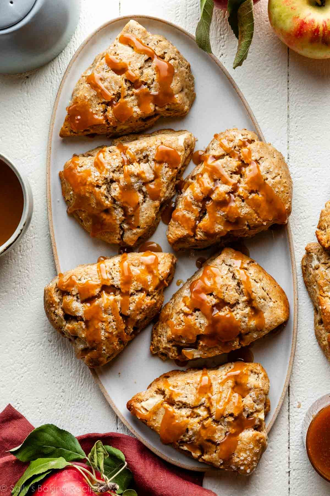

Sally's recipes

Ingredients
-
Flour: 2 cups of all-purpose flour is my standard amount for homemade
scones, but set aside some extra for the work surface and your hands.
-
Brown Sugar: I use either white granulated or brown sugar in my scone
dough—it depends on the add-ins. I love brown sugar with apples. Stick
with about 1/2 cup. Feel free to slightly decrease, but keep in mind
that the scone flavor and texture will slightly change.
- Baking Powder: Adds lift.
-
Salt, Cinnamon, & Vanilla Extract: These 3 ingredients add flavor.
-
Frozen Butter: Besides flour, cold butter is the main ingredient in
apple scones. It adds flavor, flakiness, crisp edges, and rise.
-
Heavy Cream: For the best-tasting pastries, stick with a thick liquid
such as heavy cream or whole milk buttermilk. For a nondairy option, try
using full-fat canned coconut milk. Avoid thinner liquids such as milk
or almond milk—the result is often dry, bland, and flat scones.
- Egg: Adds flavor, lift, and structure.
-
Apples: Use your favorite apple variety. I love Granny Smith,
Honeycrisp, or Fuji here. Whatever kind of apples you enjoy in your
apple pie or apple cobbler, you’ll enjoy here.
Preparation
- I recommend grating the frozen butter with a box grater.
-
Because there’s no yeast, these apple cinnamon scones go from the mixing
bowl to the oven relatively quickly. First, mix the dry ingredients
together. Second, cut shredded butter into the dry ingredients. You can
use a pastry cutter, 2 forks, or your hands for this step. A food
processor works too. To avoid overly dense scones, work the dough as
little as possible. I always use a pastry cutter.
-
Next, whisk the wet ingredients together. Pour the wet ingredients into
the dry ingredients, add the apples, then gently mix together.
- Form the dough into a disc, then cut into 8 wedges.
-
To obtain a flaky center and a crumbly exterior, scone dough must remain
cold. Cold dough won’t over-spread, either. Therefore, I highly
recommend refrigerating the shaped scones for at least 15 minutes prior
to baking. You can even refrigerate overnight for a quick breakfast in
the morning. Before baking, brush the scones with heavy cream and
sprinkle with coarse sugar. These extras add a lovely golden sheen with
a bakery-style crunch. After that, bake the scones until golden brown.
-
The scones are INCREDIBLE right out of the oven, but taste even better
with salted caramel on top. 🙂 What doesn’t?! Other topping options: You
can certainly keep the scones plain or dust with confectioners’ sugar.
Or try the maple icing from these maple brown sugar cookies, the brown
butter icing from these pumpkin oatmeal cookies, or simply vanilla
icing.